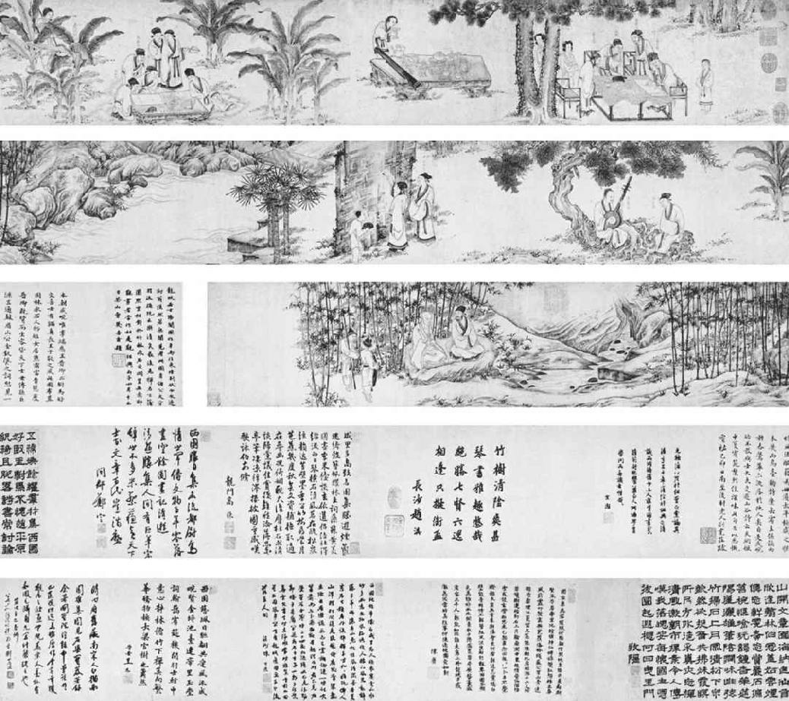
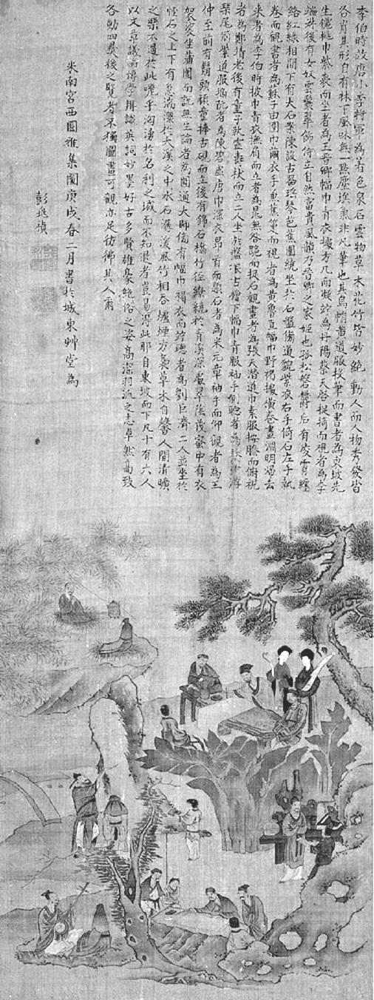
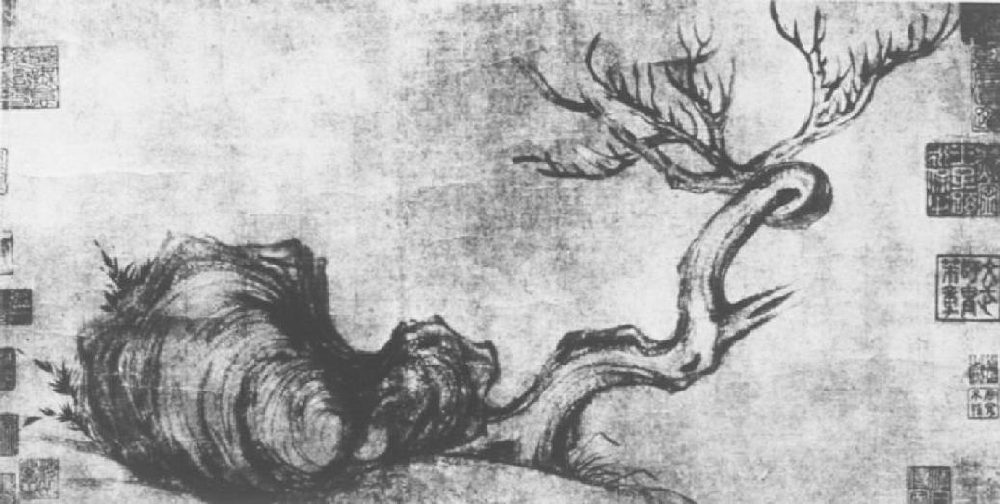

第二十章 国画
苏东坡天才横溢，神完气足，在中国艺术上，尤其是表现中国笔墨欢愉的情趣上，他能独创一派，这是不足为奇的。苏东坡最重要的消遣是他的“戏墨”之作，因为他的创造性的艺术冲动非此不足以得到自由发挥而给中国艺术留下不朽的影响。苏东坡不仅创了他有名的墨竹，他也创造了中国的文人画。他和年轻艺术家米芾共同创造了以后在中国最富有特性与代表风格的中国画。中国绘画的南派重视一气呵成快速运笔的节奏感，这一派诚然是在唐朝吴道子和王维的笔下所建立，与北派李思训之金碧朱红工笔细描是显然有别。可是，在宋朝，印象派的文人画终于奠定了基础。这一派重点在于气韵的生动与艺术家坚强的主观性，其中含有的艺术原理与技巧对现代艺术自有其重要性。
由苏东坡、米芾、黄庭坚所保存下来的艺术批评之中，我们能看出文人画在苏东坡生活里的起源，真是一件幸事。这几位文人都是诗人、书法家、画家。我们首先必须弄清楚的是，在中国是书画同源的。在技巧，在工具材料，在批评的精神与原理，都是如此。若不懂中国书法中的美学原理，就不能了解中国画南派的起源。因为中国南派画之始祖——苏东坡是其一——都是在中国诗的精神中涵养有素的，在运用笔墨的技巧上已通其奥妙，而且对中国书法的结构与气势的原理都已窥其真诠。书法为中国绘画提供其技巧与美的原理，诗则提供画的精神与气韵情调，以及对大自然的声色气味泛神性的喜悦。
在苏东坡降生之前，中国已经有丰厚的艺术传统，在书法绘画两方面皆然。苏东坡自幼年即仰慕吴道子。他在黄州那些年，一直倾其全部时光致力于绘画。现在所有他的诗画朋友都已集会在京师，而气氛也极利于他在诗画上的创造，正如一个弈棋高手发现了城中另一个弈棋高手之后，他的生活便会有所改变，同样苏东坡的生活现在也改变了。他毕竟是个文人，不是个政客。既然是文人，他的要务仍然离不开纸墨笔砚。他的门人也都是出色的文人，不断在他的书斋中流连盘桓。米芾后来成为宋朝杰出的画家，曾经有一次，他喜爱悬崖峭壁上默然无声的巨石那雄伟的气魄，乃拜伏其下，以“丈人”之名称之。他自称“米颠”，别人也以此名相称。米、苏、李（李公麟），这宋朝三大家，现在时常在一处。
这一群文人时常在彼此的家中相会，饮酒，进餐，笑谑，作诗，而大部分时间都在陶然佳境中过活。此等时光，苏、米、李三人往往走近书案，纸笔墨都在眼前。如果一个人开始作画、作诗，或写字，别人便作壁上观，或也技痒而参加，为补上诗句，或增加题跋，当时的情况与气氛理想极美矣。诗、画、字，这三者主要的材料只是两种液体物——墨与酒，除去最讲究的毛笔和用最贵、最为稀有的原料做的纸之外，他们有上等酒、上等墨。大书家和大画家一发现有上等纸张当前，就犹如小提琴名家发现面前有一把斯特拉迪瓦里牌的名琴一样——硬是不胜其魔力之诱惑。苏东坡最喜爱的是澄心堂的纸、宣城的诸葛笔，或是鼠毫笔，以及李廷跬的墨。一个人画完一幅画，一般习惯是由其他文人在上面写几首诗文做评语，或仅仅写刚才说的几句戏言。有时苏东坡和李公麟（西方收藏家多知道他叫李龙眠）合作一幅画。苏画石头，李画柏树，子由和黄庭坚题词。
有一次，在中国艺术史上很出名的事，是十六个此等名家聚会于驸马王诜的庭园之中。这就是有名的“西园雅集”，李公麟画，米芾作文记其事。画里有宋朝三大家——苏东坡、米芾、李龙眠，还有东坡弟弟苏子由、苏门四学士。石桌陈列于花园中高大的苍松翠竹之下。最上面，一条瀑布注入一条大河，河岸花竹茂密。主人的两个侍妾，梳高发髻，戴甚多首饰，侍立于桌后。苏东坡头戴高帽，身着黄袍，倚桌作书，驸马王诜在附近观看。在另一桌上，李龙眠正在写一首陶诗，子由、黄庭坚、张耒、晁补之都围在桌旁。米芾立着，头仰望，正在附近一块岩石上题字。秦观坐在多有节瘤的树根上，正在听人弹琴。别的人则分散各处，以各种姿势，或跪或站，他们是和尚和其他文人雅士。
《西园雅集图》 中国画 李公麟 宋
由于苏轼、苏辙、黄鲁直、李公麟、米芾等都是千年难遇的翰苑奇才，后人景仰之余，纷纷摹绘《西园雅集图》。后世著名画家马远、刘松年、赵孟頫、唐寅、李士达、石涛、丁观鹏等都曾画过《西园雅集图》，以至“西园雅集图”成了人物画家的一个常见画题。
普遍都认为苏东坡作品之最精者，都是他醉后或兴致昂扬之时的作品，一想中国绘画、写字时一挥而就地潇洒明快，此话不能不信。在哲宗元祐三年（一〇八八年）苏东坡任主考官之时，他和艺术家朋友李龙眠、黄庭坚、张耒等陪考官入闱将近两个月，在阅卷完毕之前不得出闱，亦不得与闱外联络。他们空闲无事，李龙眠画马自娱，黄庭坚则写阴森凄惨的鬼诗，彼此说奇异的神仙故事。至于苏东坡如何，黄庭坚记载的是：“东坡居士极不惜书，然不可乞。有乞书者，正色诘责之，或终不与一字。元祐中锁试礼部，每来见过，案上纸不择精粗，书遍乃已。性喜酒，然不能四五龠已烂醉，不辞谢而就卧。鼻鼾如雷，少焉苏醒，落笔如风雨。虽谑弄皆有义味，真神仙中人。”
苏东坡论自己书画时说：“吾书虽不甚佳，然自出新意，不践古人，是一快也。”苏东坡在世时，曾使人画像数幅，其中最有名者为程怀立和名画家李龙眠所画。在李龙眠所画的一幅上，苏东坡身坐岩石，一条藤杖斜横于膝上。黄庭坚说这张画像正好把握住他微醉之时的神情。从姿势上看，他很轻松地坐着，似正在思索宇宙中万物盛衰之理，也正享受眼前大自然的森罗万象。随时他都可能立起来，提笔蘸墨，抒写胸怀中之所感，或是用美妙的诗歌，或是用气韵生动的一幅画，或是用神味醇厚的书法。
有一次，杜几先带来一张上好的纸张，请苏东坡在上面写字，但是他提出了字的大小排列等问题。苏东坡笑着问他：“我现在是不是卖菜？”哲宗元祐二年（一〇八七年）三月，康师孟已经出版了苏氏兄弟九本字帖的精摹本。苏东坡自己的若干朋友都是热心搜集苏字的。一天晚上，他的几个朋友在他家，正在翻查几个旧箱子。有人找到一张纸，上面的字是苏东坡写的，还依稀可读。仔细一看，原来是他在黄州贬谪期间醉中写的《黄泥坂辞》。有的地方已然污损，连东坡自己都不能辨认。张耒抄写了一遍，交给苏东坡，自己则保留那份真迹。几天之后，苏东坡收到驸马王诜寄来的一封信。信里说：“吾日夕购子书不厌，近又以三缣博两纸。子有近书，当稍以遗我，毋多费我绢也。”
有苏东坡几封给朋友亲密的信，他去世之后刻在石头上，当作拓片卖，就是所谓《西楼帖》，这本帖至今还在，看来就仿佛邻居的目光一样熟悉。苏东坡在一封信的再启里，代妻子向一个朋友道谢，因为那个朋友送了他妻子一把梳子。在另一个再启里，他说要送人一锅咸猪肉。
说中国书法是一种抽象画，这种解释真是再容易不过。中国书法的问题和抽象画的问题，确是相似。在评论中国书法时，评论者完全不顾中国字的含义，而根本上就看作一种抽象的组合。说中国字是抽象画，只因为不像普通画那样描写具象的物体。中国字由线条和线条构成的偏旁所组成，具有无限的变化，而艺术原理则要求这些字之排列成行，必须排列得美妙，必须与同一行或其他行的字配合恰当。因为中国字由最复杂的成分所组成，所以呈现出构图的各种问题，包括轴线、轮廓、组织、对比、平衡、比例等项，尤其重视整体的统一。
艺术上所有的问题都是节奏的问题，不管是绘画、雕刻、音乐，只要美是运动，每种艺术形式就有隐含的节奏，甚至在建筑，一个哥特式的教堂向高处仰望，一座桥梁横跨，一个监狱沉思。从美学上看，甚至可以说“猛冲”“疾扫”“狂暴”等论人品的词，这都是节奏概念。在中国艺术里，节奏的基本概念是由书法确立的。中国的批评家爱慕书法时，他不欣赏静态的比例与对称，而是在头脑里追随着书家走，从一个字的开始到结尾，再一直到一张纸的末端，仿佛他在观赏纸上的舞蹈一般。因此探索这种抽象画的路子，自然不同于西洋抽象画。其基本的理论是“美是运动”（“美感便是律动感”），发展成为中国绘画上至高无上的原理的，就是这种节奏的基本概念。
《西园雅集图》 中国画 彭兆祯 清
这个运动上的节奏美的概念，改变了所有艺术家对线条、质量、表面、材料的看法。因为，倘若美是动态而非静态的，所有平直的线条和表面像工程蓝图的东西自然都不属于艺术的范围，而人必须寻求，举例说，树枝的折线与不平直的线条因为只有弯曲与转折线才能暗示生命与运动；只要笔的压下、微顿、疾行、偶尔的飞白泼溅，能细心并有意保存于纸上，则不难看出此种不平直的线条的生命力和运动感。在中国书法和绘画里，当力戒平直线条，除非另有必要，比如描画桌子的边缘，不得不直，这是基本的原则。结构的概念也随之改变了。倘若那些线面是僵直死板的话，中国艺术家是不能满足于此种静态的安排与线和面的对比的。因此要重视力量充沛的线条笔画，这便说明中国绘画技巧和其他形式的绘画之间的差异。
为了寻求富有活力的线条，中国书法家转向大自然。自然中的线条永远是暗示运动，且其变化丰富无限。在灵缇这种狗的平滑身上，天生是为了快速奔驰的，自有一种美；而在爱尔兰小型猎犬的多毛而粗短的线条上，则另有一种美。我们可以欣赏幼鹿的轻巧灵活，同时也爱慕狮子爪蹄巨大强劲的力量。鹿的身体美不仅在其调和的轮廓，也因为暗示了跳跃的运动；而狮子蹄爪之美是因为它暗示突然的攫取与猛扑，并且此种猛扑攫取跳跃的功能，才赋予了线条有机的谐调。谈到这类节奏之美，我们可以爱慕大象庞大笨重而不易控制的形状，蛇的蜿蜒蠕动的紧张状态，甚至长颈鹿瘦高细长的拙笨动作。所以可以说，大自然的节奏永远是含有功能作用的，因为其线条轮廓都是生长发展的结果，而且各有其用途。由于大自然这些丰富节奏，才磨炼出我们欣赏的眼光。中国书法家想在笔下运动上所模仿的，就正是这些自然的节奏律动，而也非中国感受力极为灵敏的毛笔不为功。有的笔画坚定而圆满，暗示狮子蹄爪的巨大力量，有的笔画暗示马腿的强壮有力、骨节嶙峋。有的点划要暗示清爽整洁，字也有方正的肩膊腰肢和支架，像端正的女人，正如中国艺术批评家所说如“美人头上戴鲜花”。有的模仿枯藤的美姿，藤的末端稳定而微微向上弯曲，复点缀以一些嫩芽小叶以求平衡对称。千万不可忘的是，那条枯干的垂藤的平衡，是自然而完美的，因为其末端弯曲的形状与角度，全以此长藤的重量、茎的支持力、在这边或那边残余的叶子的重量为依归的。
苏东坡说，他的友人文与可习书甚久而不见成功，后来一人独行山径，见二蛇相斗。他从相争斗的两条蛇身上的律动，获取了灵感，把蛇身上那种矫健动作吸取于笔画之中。另一个书法家是在看见樵夫与一村姑相遇于山间小径上时，悟出了节奏的秘诀。因为当时樵夫与村姑都要让路给对方，二人当时都犹疑不定，不知谁该站稳让对方过去。那二人一时的前后的闪躲，产生了一种紧张动作和相反的动作，据说这种紧张动作使他生平第一次悟出了书法艺术的原理。
运用在绘画上，线条的杂乱而又和谐的律动就产生了可概括称之为中国艺术的印象派，这一派艺术家所关注的只是记下他头脑里的印象，用一种明确的律动美表现，而不是以将眼前的景物描绘下来为满足。结构越单纯，表现律动美越容易。因此苏东坡才集中表现律动美在几枝竹子上或是几块粗犷的岩石上，而这样表现出来的景物也就成为内容很充分很丰富的图画了。画上表现出的律动美，本身即要求削除所有与此统一概念毫不相干的景物。要看印象主义艺术极端的例子，在八大山人的一只鸡和一条鱼上，或是石涛的果园上，都很容易看出来。不管画的是鱼、是鸡、是鸟，八大山人的艺术可以看作是用最少的线条、最少的墨，表现最多的内容的艺术。八大山人完成他的一条鱼、一匹马，或是一张画像，为时不过数分钟，用墨不过迅速的寥寥几笔。他不是画好，就是画坏；若是画坏，便将纸揉烂成团，扔到废纸篓中去，重新画过。
惜墨如金，就说明了中国画纯出自然。但是惜墨如金与高度集中在主体景物上，也产生了别的结果。苏东坡的几枝竹枝竹叶，后面一月当天，依稀可见，创造出两种效果。第一，因为没有其他不相干的景物，故能刺激观赏者的想象；第二，那幅画暗示那几片竹叶，在月夜安然静止也好，在风雨中猛力摇摆也好，在其表现出来的单纯律动美上，是令人百观不厌的。画几竿竹、一条曲线、几块粗犷的岩石的动机，就和写几行字的动机一样。一旦心情表现出来，印象留在纸上了，艺术家便感到满足，感到快乐。他于是能把同样的满足与快乐给予观赏的人。
《枯木竹石图》 中国画 苏轼 宋
实际上，在中国绘画史上，没有任何一种画论超过苏轼画论的影响，它有力地推动了文人画潮流的发展，在一定程度上可以说苏轼是文人画理论的实际奠基人。这幅传世作品《枯木竹石图》正为其画论的集中体现。
所以这一派文人画也叫作写意，也就是印象主义。“意”字甚难译成英文，大致就是艺术家所要表达的，若在英文里找个字代替，恐怕要用intention（意图）、conception（概念）、impression（印象）或mood（心境）。若指这一派绘画用conceptivism（概念主义），则无不可，因为这个字的重点是统一的概念，正是艺术家所要描绘的唯一形象。
艺术的中心问题，不论古今中外，完全相同。印象主义，简言之，就是对照相般的精确的反叛，而主张将艺术家主观印象表达出来，作为艺术上的新目标。苏东坡用两句诗充分表达这种反叛精神。他说：“论画以形似，见与儿童邻。”在评论一个年轻写意派画家宋子房时，苏东坡说：“观士人画如阅天下马，取其意气所到。乃若画工，往往只取鞭策皮毛、槽枥刍秣，无一点俊发，看数尺许便卷。汉杰（宋子房号）真士人画也。”
宋代画家又向前迈了一步，在一张画里，不但要表现作者的印象或概念，也要表现内在的机理。简单来说，宋代画家要画的是精神，而不是外形。宋代哲学的派别叫作理学。在佛教的形而上学的影响之下，儒家把注意力从政治的规矩形式和社会撤离，转而沉潜到心和宇宙方面去。借助于印度的神秘主义和形而上学，他们开始谈论这个“理”字，粗略说，就是自然与人性里的“理由”，或“自然的法则”，或“万物的内在精神”。宋儒囿于中国人对抽象的形而上学无能力或无爱好，他们在把“理”当作“自然律”的研究上，所入不深。但是他们却完全相信在万物的外形后面，有一种无处无之的力量，或是精神，或是“理”；自然本身，是精神，是活泼泼的，而画家应当在画里把握万物此种无以名之的内在精神。所以画家在画秋天的树林时，不应当以描绘树叶丰富的颜色为目的，而是要捕捉那不可见的“秋意”或“秋思”，换句话说，要使人觉得要披上一件夹大衣出去吸那干爽清凉的空气，似乎在大自然季节的蜕变中，看得出渐渐阴盛阳衰了。苏东坡在教儿子作诗时，要他把花的个别性表现出来，使人对一行写牡丹的诗，不致误认是写紫丁香或梅花。牡丹的特质是丰盈华丽，梅花则秀逸脱俗。那种特质的把握则有赖于画家的眼睛与诗人的想象。要画鱼，则艺术家必须了解鱼的本性，但是为达到此目的，画家必须运用其直觉的想象，在心神上，与鱼同在水中游，体会鱼对水流与风暴、光亮与食物的反应。只有懂得鲑鱼在急流激湍中跳跃时的快乐，并知道那对鱼是多么富有刺激性，一个画家才应当画鲑鱼。否则，他最好不要动手，不然无论他画的鱼鳞、鱼鳍、鱼眼多么精确，那张画仍是死的。
画家必须注意观察细节。苏东坡一次记载一件好笑的事：四川省有一个绘画收藏家，在他收藏的数百幅名画中，他最珍惜戴嵩画的《斗牛图》。一天，这个收藏家在院子里晒画，一个牧童赶巧在此经过，他向那幅画看了一下，摇头大笑。人问他何故发笑，牧童回答说：“牛相斗时，牛尾巴一定紧夹在后腿中间，这张画上牛尾巴却直立在后面！”苏东坡也看不起名花鸟画家黄筌，因为他对鸟的习惯观察错误。但是只凭观察与精确，并不能产生真艺术。画家必须运用直觉的洞察力，等于是对大自然中的鸟兽有一种物我胞与的喜悦。也许要真懂苏东坡描绘万物的内在机理，他所努力以求的是什么，最好看他画的一幅仙鹤图上的题诗。他说，仙鹤立在沮洳之地看见有人走近，甚至仙鹤连一根羽毛还未曾动，已先有飞走之意，但是四周无人之时，仙鹤完全是一副悠闲轻松的神气。这就是苏东坡想表现的仙鹤内在精神。
在进一步论到画的内在精神而非外在形体时，苏东坡说：
余尝论画，以为人禽、宫室、器用皆有常形；至于山石竹木、水波烟云，虽无常形，而有常理。常形之失，人皆知之；常理之不当，虽晓画者有不知。故凡可以欺世而取名者，必托于无常形者也。虽然，常形之失，止于所失，而不能病其全；若常理之不当，则举废之矣。以其形之无常，是以其理不可不谨也。世之工人，或能曲尽其形，而至于其理，非高人逸才不能办。与可之于竹石枯木，真可谓得其理者矣。如是而生，如是而死，如是而挛拳瘠蹙，如是而条达畅茂。根茎节叶、牙角脉缕，千变万化，未始相袭，而各当其处。合于天造，厌于人意。盖达士之所寓也欤。……必有明于理而深观之者，然后知余言之不妄。
所有绘画都是一种哲学不自觉的反映。中国画不知不觉中表示出天人合一与生命运行的和谐，而人只不啻沧海之一粟，浮光泡影而已。由此观之，所谓中国的印象派绘画，不论是一竿修竹、一堆盘根，或深山烟雨，或江上雪景，都是爱好自然的表现。画家与画中景物之完全融而为一的道理，解释得最为清楚的莫如苏东坡在朋友家墙壁上自题竹石的那首诗：
空肠得酒芒角出，肝肺槎牙生竹石。 森然欲作不可回，吐向君家雪色壁。